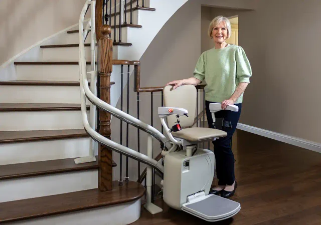
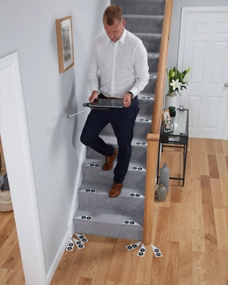

Curved stairlifts
When your stairs turn a corner, bend, or break at a landing, the rail has to be made to match. Every curved lift we install is custom measured for the staircase it rides on.
A rail built to trace your exact staircase
Curved staircases are all different, so the rail can't come off a shelf. We photo-measure every turn, riser and landing on your stairs, and the rail is fabricated to that exact shape, tight to the wall and the banister, with no shortcuts on the bends.
That precision is why curved lifts take a little longer to build than straight ones. Every rail is made for one staircase: yours.
Book a free in-home assessment



See it on the stairs before you order
Our photo-measure process previews the exact rail path on your own staircase before anything is built, so you know how it will look and fit ahead of time. Choose your rail colour and seat style with confidence.
Book a free in-home assessmentOur curved lift lineup
Three curved models, from a basic twin-rail lift to a discreet single-tube design.
Stairfriend 23
Our most basic twin-rail curved lift, built for everyday reliability.
Request a quote

What a curved installation includes
Precise photo measurement
We take detailed measurements and photos of every turn and landing so the rail is fabricated to your stairs exactly, not a generic curve.
Indoor and outdoor rails
Weatherproof curved rails are available for outdoor steps, so a lift can carry you from the driveway or garden right to the door.
Fits tight to the wall
Because the rail is custom bent, it hugs the staircase closely and leaves room for others to use the stairs alongside it.
Dual rails for wide stairs
Split or double-wide staircases can take two rails side by side, so more than one household member can use the stairs freely.
Pictures speak louder than words
Have a single, straight flight instead?
If your stairs run in one line with no turns and no landing part-way, a straight lift will do the job for less, and it installs faster too.
Just a single straight flight?
A stock rail that installs in just hours.
See straight stairliftsBook a free in-home assessment
Tell us a little about your stairs and we will call to arrange a visit. No cost and no obligation.
Prefer to talk now? Call 519-904-4932